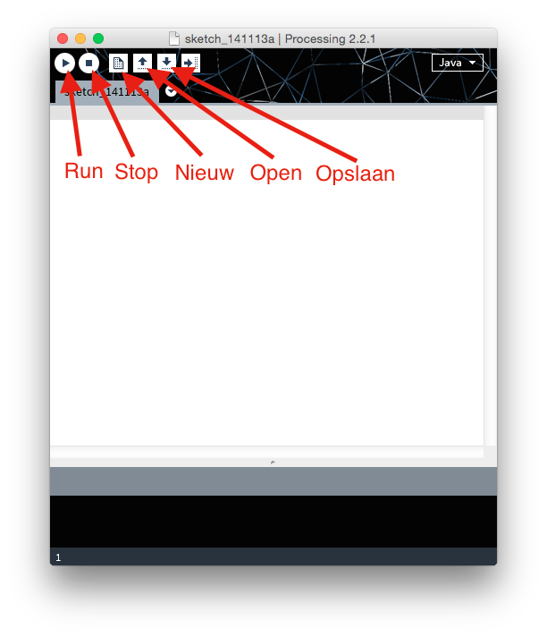

Java is één van de populairste programmeertalen. Processing is feitelijk Java. Er is alleen een aantal functies bijgeschreven (in Java) waarmee je eenvoudig op het scherm kunt tekenen. Ook wordt Processing geleverd met een editor waarin je je programma kunt schrijven, en makkelijk kunt draaien.
In deze eerste les maak je kennis met de editor, en zet je de eerste stappen in programmeren met Processing.
Hieronder zie je het standaard venster van Processing. Met de knoppen Run en Stop kun je straks je programma testen. Met Nieuw, Open en Bewaar kun je een nieuw programma starten, een programma openen of je programma bewaren op schijf.
In het grote lege venster kun je je eigen programma in gaan typen. Processing is heel eenvoudig:
ellipse(50, 50, width / 2, height / 2);
Dus.